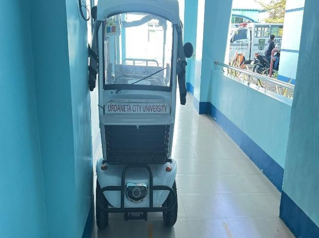
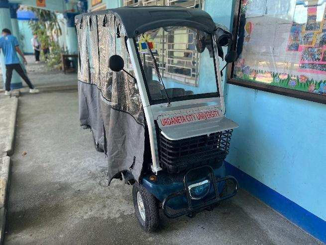
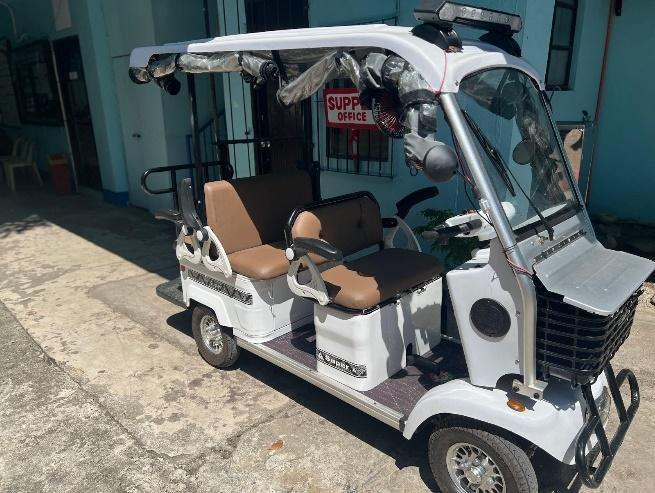
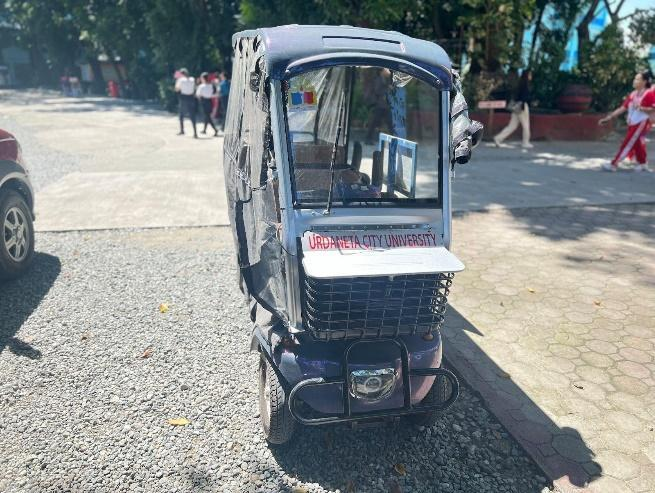

| ELECTRIC VEHICLES - 4 | |
|---|---|
|
 Front view of UCU-branded electric micro-utility vehicle
|
 Side profile of zero-emission utility vehicle parked in building hallway
|
|
 Four-seater electric carriage utilized by Supply Office and Administration
|
 UCU e-vehicle deployed on campus pathways for official personnel errands
|
Urdaneta City University demonstrates its commitment to sustainable and eco-friendly transportation through the implementation of Zero Emission Vehicles (ZEV) on campus. Currently, the university operates four (4) electric bicycles (e-bikes) that are actively used by personnel from key offices such as the Engineering Management and Auxiliary Services (EMAS), General Services Office (GSO), the Vice President for Administration Office, and the Supply Office.
These university-provided e-bikes are used for official tasks including document delivery, errands, and light transport within campus premises. By replacing traditional fuel-powered vehicles for short-distance travel, the initiative significantly reduces carbon emissions, lowers fuel consumption, and promotes cleaner air within the campus environment.
To ensure continuous and efficient use, the university has also established on-site charging stations, supporting the reliability and accessibility of these zero-emission vehicles. Importantly, these e-bikes are provided free of charge, encouraging their use among university personnel and reinforcing a culture of sustainability.
Overall, this initiative reflects UCU’s strong commitment to green mobility and aligns with its broader environmental goals. By integrating ZEV into daily operations, the university is actively working toward minimizing its ecological footprint while promoting sustainable transport solutions.